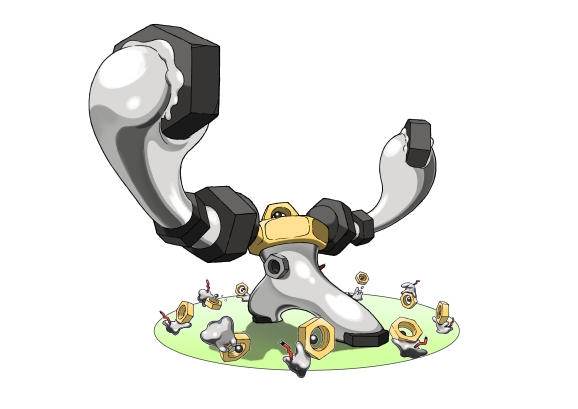

Travel between the real world and the virtual world of Pokémon with Pokémon GO for iPhone and Android devices. With Pokémon GO, you'll discover Pokémon in a whole new world—your own! Pokémon GO gives you the chance to explore real locations and search far and wide for Pokémon. More and more Pokémon continue to appear around the globe, including rare and powerful Legendary Pokémon.

As you move around the places where you live and visit, your smartphone can vibrate to let you know when you're near a Pokémon. Once you've encountered a Pokémon, take aim on your smartphone's touch screen and throw a Poké Ball to catch it—but be careful, or it might run away! Also look for PokéStops located at interesting places—such as public art installations, historical markers, and monuments—where you can collect more Poké Balls and other items.
Are you ready for an exciting challenge? You can now take on another Trainer at any time in Pokémon GO. With Trainer Battles, you can match up against another Trainer by using a Battle Code, then face off using a team of three Pokémon. When the battle is over, both participants receive great rewards, including a chance at rare Evolution items.
The fast-paced battles take place in real time, and your Pokémon can use both their Fast Attacks and Charged Attacks. Just keep an eye on your opponent's attacks, and deploy a Protect Shield to save your Pokémon from taking critical damage. Be careful, though—you only have a limited number of Protect Shields before your Pokémon will be left defenseless against big attacks.
Your opponent will usually have to be nearby for you to initiate a Trainer Battle. But you can challenge Trainers you're Ultra Friends or Best Friends with from any distance. Good luck, Trainers!
Get connected with your real-life friends in Pokémon GO, and you can interact with them in a variety of exciting ways. After exchanging Trainer Codes, you will see your friends on your Friend List.
One way that you'll be able to play with your friends in Pokémon GO is by giving Gifts. When you spin a Photo Disc at a PokéStop or Gym, you have a chance of collecting a special Gift. Although you can't open these Gifts yourself, you can send them to someone on your Friend List. The Gifts contain a variety of helpful items (and occasionally special Eggs) and come with a postcard showing where the Gift was collected.
You can increase your Friendship level with others by sending Gifts or participating in a Raid or Gym Battle with them. As your Friendship level rises, bonuses can be unlocked.
There's another way to build your Friendship level, and that's by trading Pokémon! If you are near a friend and have a Trainer level of 10 or higher, you can trade Pokémon with them. Completing a trade requires Stardust, but it earns a bonus Candy for the Pokémon you traded away, and that bonus increases if the Pokémon the two of you trade were caught in locations far apart from each other.
Each Pokémon in the trade might become a Lucky Pokémon—you'll know right away by a new sparkly appearance. These Lucky Pokémon require less Stardust to power up, too. And Lucky Pokémon can be detected by the Pokédex so you can keep track of them. The longer the Pokémon have spent in storage, the higher the chance that they will become Lucky Pokémon when they're traded.

When you first play Pokémon GO, you'll get to customize your Trainer, choosing apparel and accessories to give them a cool look. Your customized Trainer will appear as you move around on the map and on your profile page. Other players will also see your Trainer when they visit a Gym you control or when you interact as friends (see below).
In Pokémon GO, you will gain levels as a Trainer. At higher levels, you'll be able to catch more powerful Pokémon to complete your Pokédex. You'll also have access to stronger items to heal your Pokémon after battle, improved Poké Balls to give you a better shot at catching Pokémon, and useful Berries. Keep exploring and catching Pokémon to raise your.
There are other ways to add Pokémon to your Pokédex. If you catch the same species of Pokémon enough times, you may be able to evolve it! And you may find Pokémon Eggs at PokéStops, which will hatch once you've walked a certain distance with it in an incubator—perhaps resulting in a Pokémon you've never seen before!
As you're out exploring, keep an eye on the real-world weather, as it will influence which Pokémon you're likely to discover. For example, Water-type Pokémon will be more plentiful during rainy weather.
In Pokémon GO, you will gain levels as a Trainer. At higher levels, you'll be able to catch more powerful Pokémon to complete your Pokédex. You'll also have access to stronger items to heal your Pokémon after battle, improved Poké Balls to give you a better shot at catching Pokémon, and useful Berries. Keep exploring and catching Pokémon to raise your level.
There are other ways to add Pokémon to your Pokédex. If you catch the same species of Pokémon enough times, you may be able to evolve it! And you may find Pokémon Eggs at PokéStops, which will hatch once you've walked a certain distance with it in an incubator—perhaps resulting in a Pokémon you've never seen before!
As you're out exploring, keep an eye on the real-world weather, as it will influence which Pokémon you're likely to discover. For example, Water-type Pokémon will be more plentiful during rainy weather.

If a rival team has claimed a Gym, you can challenge it by using your Pokémon to battle the Pokémon defending the Gym. You choose which of your Pokémon will join in the battle. Each Pokémon has two kinds of attacks, and can also dodge the defending Pokémon's attacks if you swipe left or right. If your Pokémon win the battle, the motivation of the defending Pokémon is reduced. When the motivation of each defending Pokémon drops to zero, the defending team loses control of the Gym, and you or another player can then take control of it by assigning a Pokémon to defend it.
Take on tough solitary Pokémon in exciting Raid Battles at select Gyms. These Raid Bosses are more difficult to battle than the Pokémon you'd ordinarily catch in the wild—so tough that you'll need to join up with other Trainers to take one of them on. If you can defeat the Raid Boss, you'll earn a chance to add the powerful Pokémon to your team and get extremely rare items.

Professor Willow, your guide through the world of Pokémon GO, needs collaborators to help with his research as he investigates mysterious events all over the world. There are two types of research that Trainers can help with: Field Research and Special Research. Field Research tasks can be found by spinning the Photo Disc at PokéStops and Gyms. You will receive objectives to complete, such as discovering and catching certain Pokémon or engaging in battles. Professor Willow will present the Special Research himself with story-driven activities that will take you further into the world of Pokémon GO than ever before!
There's no limit to the number of research tasks that can be completed each day, and they grant rewards such as useful items. The more difficult the task, the greater the reward, so hard-working Trainers will benefit quite a bit.
A portable device called the Poké Ball Plus enables you to enjoy the game even when you're not looking at your smartphone. The device connects to your smartphone via Bluetooth and notifies you about events in the game (such as the appearance of a Pokémon nearby) using an LED and vibration. In addition, you can catch Pokémon or perform other simple actions by pressing the button on the device.

There is also a deep connection between Pokémon GO and Pokémon: Let's Go, Pikachu! and Pokémon: Let's Go, Eevee! Pokémon originally discovered in the Kanto region that you've caught in Pokémon GO can be brought into these two new Nintendo Switch games.
Connecting Pokémon GO to Pokémon: Let's Go, Pikachu! or Pokémon:Let's Go, Eevee! is also a great way to meet the new Mythical Pokémon Meltan and its evolved form, Melmetal. Sending Pokémon from Pokémon GO into one of the Nintendo Switch titles gets you certain items in the app, such as Candies for the species of Pokémon you sent. However, the first time you send a Pokémon, you'll also be able to get a very special item: a Mystery Box!
Opening a Mystery Box in Pokémon GO causes Meltan to appear for a limited time. Touch a Meltan you see on the field map, and then try to catch it with a Poké Ball. By collecting 400 Meltan Candies, you can evolve this Steel-type Pokémon into the powerful Melmetal.
Exploring is a breeze with the Adventure Sync feature in Pokémon GO. With Adventure Sync, you can record how far you walk even while Pokémon GO is inactive. Plus, you keep earning Buddy Candy and making progress toward hatching Pokémon Eggs as you walk.
You receive notifications when your Buddy Pokémon finds Candy for you and when an Egg is about to hatch. Then, at the end of each week, Adventure Sync provides a summary of your activities, including how much Candy you collected and how far you walked. You even earn rewards for every distance milestone you cross.
You can opt in to Adventure Sync at any time, and the feature connects to both the Health app on Apple devices and Google Fit on Android devices.
Dive deeper into the fun of Pokémon encounters with AR+ mode, a feature available on iPhone 6s and newer models running iOS 11 or higher. AR+ mode takes Pokémon GO's augmented reality feature even further by placing the Pokémon you encounter firmly into the scene in front of you. With AR+, you can get closer to a Pokémon to make it easier to catch, or line up the perfect picture. But be careful as you approach the Pokémon, or you might scare it off!
Pokémon GO is available for download at no charge on the App Store and Google Play. Pokémon GO is free to play, with loads of fun things to do and Pokémon to discover at every turn. For players who want to enhance their Pokémon GO experience even more, certain items and features can be accessed via in-app purchases. Players can spend real money on PokéCoins, the in-game currency of Pokémon GO. PokéCoins can then be exchanged for power-ups, extra items, and more.
When you encounter a Pokémon in the wild, you can turn on the camera feature, putting the wild Pokémon into the live scene where your camera is facing. Line up your shot and hit the shutter button to take the photo. You can then save the snapshot to your smartphone for you to share however you'd like.
Pokémon GO features all-new music composed by GAME FREAK's Junichi Masuda. Mr. Masuda has worked on Pokémon games since the very beginning and has composed many of the classic and memorable songs that have inspired fans for decades.
With the Buddy Pokémon feature, you can choose a Pokémon from your collection to travel at your side, opening up in-game rewards and experiences. Your Buddy Pokémon will appear alongside your Trainer on your profile screen and reward you with helpful bonuses—including Candy—as you walk with it.
Visit the Pokémon GO official site for more details.©2016–2018 Niantic, Inc. ©2016–2018 Pokémon. ©1995–2018 Nintendo / Creatures Inc. / GAME FREAK inc.
Apple and the Apple logo are trademarks of Apple Inc., registered in the U.S. and other countries. App Store is a service mark of Apple Inc.
Android, Google Play, and the Google Play logo are trademarks of Google, LLC.
Release Date: July 6, 2016
Genre: Real World Adventure
Platform: iPhone
Players: Single Player or
Multiplayer

Release Date: July 6, 2016
Platform: Android devices